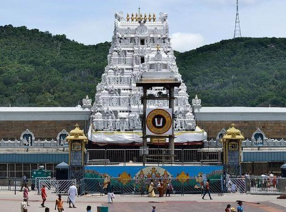
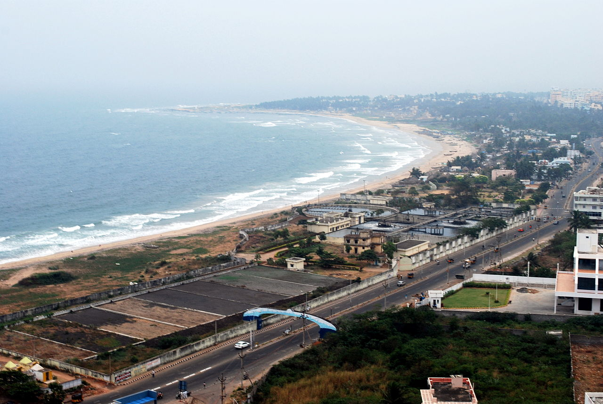
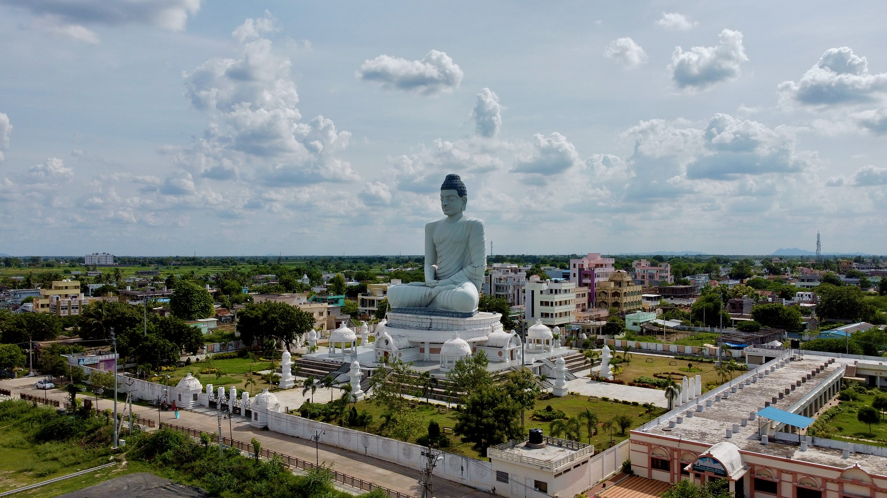
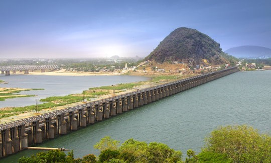

The region of Andhra Pradesh has a significant historical presence dating back to ancient times. The Satavahana dynasty,
which ruled from the 2nd century BCE to the 3rd century CE, had its capital at Amaravati.
Buddhism flourished during this period, and the Amaravati Stupa, one of the great stupas of ancient India, was constructed.
popular places in andhra pradesh

Tirupati: Famous for the Sri Venkateswara Temple, one of the most visited religious sites in the world.

Visakhapatnam (Vizag): A coastal city with beautiful beaches like RK Beach, Yarada Beach,
and a submarine museum. It is also an industrial hub.
most languages used : hindi and english and marathi food : biryani , pulaw

Amaravati: The new capital city of Andhra Pradesh,
known for the Amaravati Stupa and the upcoming government buildings.

Vijayawada: A major city located on the banks of the Krishna River,
known for the Kanaka Durga Temple and Prakasam Barrage.
Additional Place in Andhra pradesh for visit
Araku Valley: A scenic hill station known for its coffee plantations, waterfalls, and tribal culture.
Rajahmundry: Situated on the banks of the Godavari River, known for the Godavari Bridge, Pushkar Ghat, and Papi Kondalu.
Srisailam: Famous for the Mallikarjuna Jyotirlinga Temple, located on the Nallamala Hills.
Kurnool: Rich in historical significance, with attractions like the Konda Reddy Fort, Oravakallu Rock Garden, and Belum Caves.

piyush chaubey :- for hiring or about me click the link :-
Piyush portfolio
prashant dwivedi :- for hiring or about me click the link :-
Prashant portfolio
Contact us: xyz@gmail.com
© copyright reserved since 2023